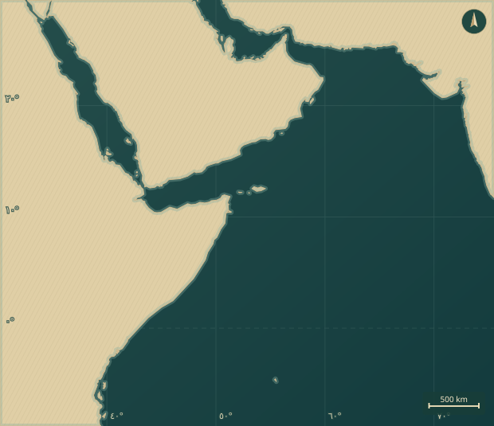

قاعة الخرائط
عُمان وشرق أفريقيا
تبدأ سيرة الشيخ عامر في حلفا بوادي بني خالد، وتصل إلى كشكاش من أعمال ويتة في جزيرة بيمبا. على هاتين الخريطتين تتضح صلة الأماكن التي تذكرها سيرته.

شبه الجزيرة العربية عُمان وادي بني خالد بحر العرب شرق أفريقيا المحيط الهندي أرخبيل زنجبارالسواحل معاصرة. لم ترد في المصادر المعروضة تفاصيل خط سير الرحلة.
دليل الأماكن
الأسماء في السيرة
اختر اسمًا لقراءة صلته بالشيخ ومصدر التعريف به.
سلطنة عُمانجنوب شرقي شبه الجزيرة العربية
تعود أصول الشيخ عامر بن سليمان بن خلفان الشعيبي إلى قرية حلفا في شرقي عُمان. تقع ولاية وادي بني خالد اليوم في محافظة شمال الشرقية.
التعريف بالولاية في موقع المحافظةوادي بني خالدولاية المنشأ
وُلد الشيخ في قرية حلفا بالولاية سنة ١٨٤٤م بحسب السيرة العائلية. تمثّل العلامة موضع وادي بني خالد على مقياس الخريطة الإقليمية، أما موضع المنزل فلم تُعيّنه المصادر.
الموضع في الدليل الجغرافي GeoNamesزنجبارالأرخبيل قبالة ساحل تنزانيا
تقع جزيرتا بيمبا وأونغوجا في أرخبيل زنجبار. وترد زنجبار في سيرة الشيخ أيضًا اسمًا للسلطنة التي تولّى القضاء في عهدها. تحدّد الخريطة الثانية موضع ويتة في بيمبا شمال أونغوجا.
التعريف الجغرافي من مكتب الإحصاء في زنجبار (PDF)ويتةالجزيرة الخضراء · بيمبا
تقع ويتة، واسمها اليوم Wete، في شمال جزيرة بيمبا. تذكر دراسة طاهر بن خميس العميري كشكاش من أعمال ويتة، نقلًا عن سعيد بن علي المغيري في «جهينة الأخبار في تاريخ زنجبار».
موضع ويتة في الدليل الجغرافي GeoNamesكشكاشموضع القضاء في الرواية التاريخية
تولّى الشيخ عامر القضاء في كشكاش من أعمال ويتة في عهد السلطان حمد بن ثويني. يثبت النص التاريخي هذه الصلة، ويظل تعيين موضع كشكاش على خريطة اليوم غير محسوم في المصادر التي اعتمدها المتحف.
دراسة طاهر بن خميس العميري في مجلة نزوىرُسمت السواحل من بيانات Natural Earth المتاحة للملك العام. إحداثيات العلامتين من GeoNames بموجب CC BY 4.0.